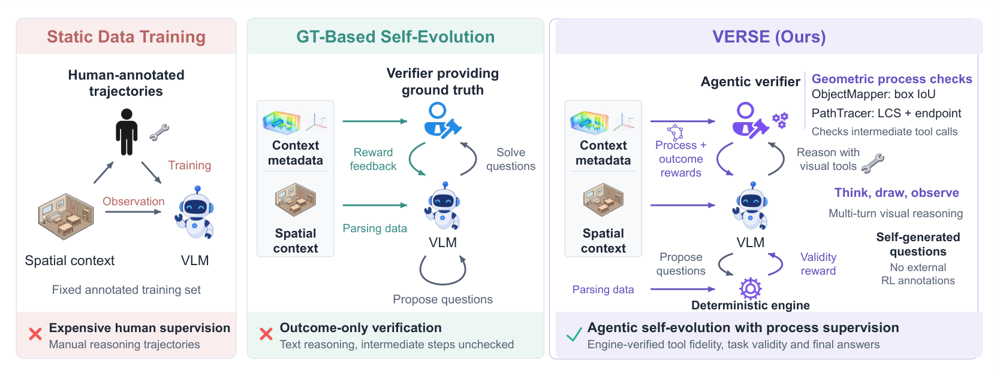
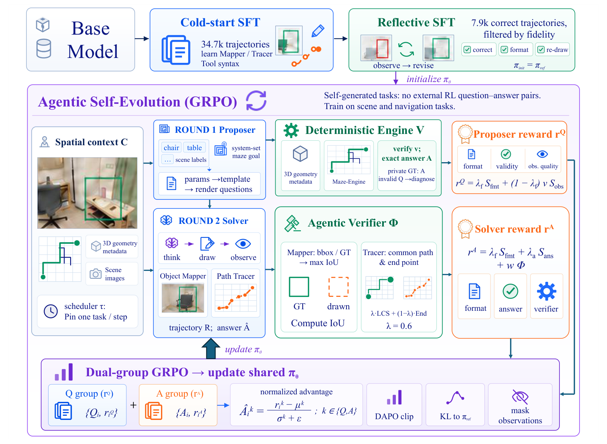
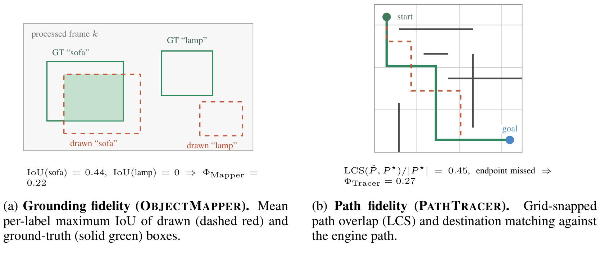
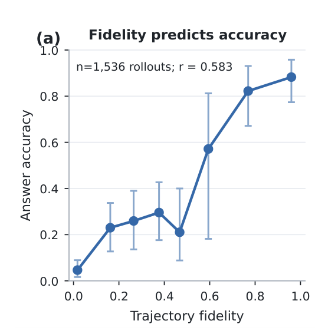
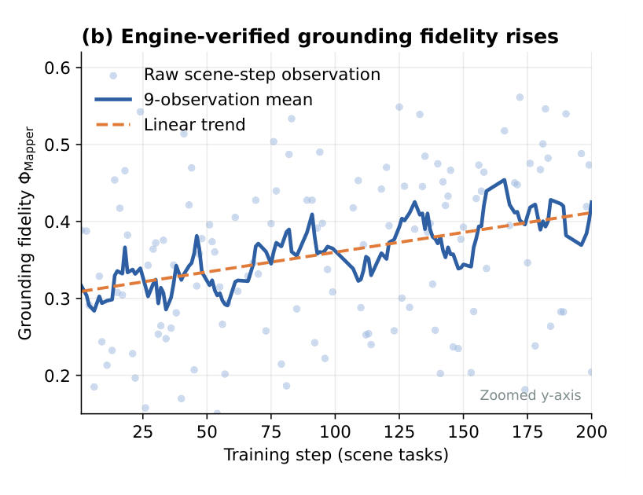

Humans reason about space by sketching: we mark objects, trace routes, and check the marks against the scene. VLMs can be given the same ability through agentic visual tools, namely Object Mapper (bounding boxes) and Path Tracer (line segments), which let the model think, draw on the image, observe the result, and revise. The open question is how to train such tool use. Figure 1 contrasts three paradigms.
Imitate human-annotated reasoning trajectories on a fixed training set.
Every trajectory has to be written by a human or a teacher model, so supervision is expensive and the data cannot grow with the model.
The model proposes its own questions over 3D scenes, and a deterministic engine supplies verified answers. No human labels are needed.
Only the final answer is checked. Once the model draws, a box on the wrong object or a route through a wall earns the same reward as a faithful drawing whenever the final guess happens to be right.
Agentic self-evolution with process supervision. The model proposes questions, the engine certifies them, and the model solves them by thinking, drawing, and observing.
An Agentic Verifier scores every intermediate tool call against the engine's geometry (box IoU, path overlap + endpoint). Faithful drawing is rewarded directly, and the RL stage needs no external annotations.
The key observation is that the self-evolution engine already knows the exact 2D projection of every object in a ScanNet scene and the canonical route through every maze. VERSE reuses this ground truth to verify the process, not just the outcome, with a closed-form reward that needs no learned reward model and no LLM judge.

34,745 teacher-generated tool-use trajectories teach the base model the Object Mapper / Path Tracer syntax and JSON schema.
7,912 filtered trajectories that are correct, well-formatted, and contain an active re-drawing event teach the model to observe and revise its marks. The result is \(\pi_\text{init} = \pi_\text{ref}\).
No annotated RL questions, answers, or trajectories. The model proposes structured questions, the engine certifies them and computes the answer, and the model solves them with tools. Both roles are updated with dual-group GRPO.
Round 1: Proposer. Given a context \(C\) (posed ScanNet frames with 3D boxes, or a procedural maze) and a task type \(\tau\) pinned by a round-robin scheduler, the policy emits only symbolic parameters (object labels, a maze goal). These are rendered into a question through a canonical template. The deterministic geometric engine checks validity \(v_i\) and computes the exact answer \(A_i\). Invalid questions never reach the solver.
Round 2: Solver. For each certified question the policy rolls out \(G_A = 8\) multi-turn trajectories and is rewarded by
Proposer and solver advantages are normalized separately (dual-group GRPO), with asymmetric clipping \([\epsilon_l, \epsilon_h] = [0.2, 0.3]\), a low-variance KL to \(\pi_\text{ref}\), and environment observations masked from the gradient.
The engine that certifies questions also knows the exact 2D projection of every object and the canonical maze route. The Agentic Verifier turns that knowledge into a closed-form score \(\Phi \in [0, 1]\) for the intermediate drawings, independent of whether the final answer is right.
Mean over query-relevant labels of the best drawn-box IoU. A label that is never drawn scores \(0\), so the model has to localize every referenced object at least once.
The drawn route is snapped to grid cells and aligned with the engine path by longest common subsequence, plus a bonus for reaching the right cell. We use \(\lambda = 0.6\).

Drag or resize the red boxes, and click maze cells to draw a route. The verifier scores update live, next to what an outcome-only reward would give.
Try the wall-crossing shortcut: it reaches the goal, so an outcome-only reward gives it the same full credit as the faithful route, even though it follows almost none of the real path. \(\Phi_\text{Tracer}\) separates the two. This toy maze only illustrates the formulas; the paper evaluates them on engine-generated mazes and ScanNet scenes.
We evaluate on three modalities: video spatial intelligence (VSI-Bench), multi-view relations (SPAR-Bench), and image-based navigation (MAZE). Both scales improve on all three benchmarks. The largest VSI-Bench gains are on metric subtasks where localized drawing helps most: absolute distance goes from 14.59 to 30.14 and object size from 38.64 to 54.56.
Main results (%). Best in bold, second-best underlined. Green numbers give each VERSE model's gain over its untuned Qwen2.5-VL base.
VERSE does not answer in one shot. At every turn it writes a short <think>, emits a JSON call to
Object Mapper or Path Tracer, receives the re-rendered image as a new observation, and decides whether to
revise or to answer. Below are real VERSE-7B rollouts on held-out benchmark questions. Every frame is re-drawn
deterministically from the exact coordinates the model emitted; nothing is re-generated or edited.
Pick a benchmark and a question, then step through the turns with / or by clicking a turn in the transcript. These cases were answered correctly and passed a manual audit of the drawn boxes and paths.
What happens if we train the same model with the same self-evolution loop but set the process-reward weight to \(w = 0\) (outcome-only RL)? The tools are still called, but nothing forces the drawings to be right. In the maze below, the outcome-only checkpoint traces straight through walls, reports every step as “correctly visualized”, and ends at the wrong destination. Reasoning excerpts for this case are truncated in our logs.
Benchmark accuracy alone cannot tell faithful drawing from lucky answers. We therefore measure the drawings themselves against engine ground truth, separately from final-answer correctness.

Across 1,536 maze-navigation rollouts, path fidelity \(\Phi_\text{Tracer}\) correlates with answer accuracy (\(r = 0.583\), 95% CI [0.496, 0.665]). Accuracy rises from about 5% in the lowest-fidelity bin to above 85% in the highest. The path reward therefore tracks something that matters for task success, not just how the drawing looks.

Over the 200-step VERSE-7B run, we score the solver's drawn boxes against engine ground-truth boxes on all 129 scene-task updates, independently of whether the answer was right. Individual updates are noisy because they span different scenes and tasks, but both the 9-update moving average and the linear trend rise steadily.
First vs. last 20% of 129 scene-task updates. Hit Rate@0.5 is the fraction of relevant objects whose best drawn box has IoU ≥ 0.5; Coverage is the fraction of relevant objects with any drawn box.
Comparing the first and last 20% of updates, mean max-IoU rises from 0.318 to 0.411 (+29.2%) and Hit Rate@0.5 from 0.364 to 0.467. Coverage grows less (60.9% to 68.1%). The model is not only drawing boxes for more of the queried objects; the boxes it draws land on the right objects more often.
Removing self-evolution drops VSI-Bench by 5.59 points, removing the engine's question certification by 1.91, and removing process rewards (\(w = 0\)) by 1.63. The outcome-only drop looks small in aggregate, but outcome rewards cannot tell faithful drawings from lucky answers. The outcome-only failures and the process-level analysis above test this distinction directly.
VSI-Bench ablations on Qwen2.5-VL-7B (%). Identical checkpoint schedules.
ViLaSR is the closest baseline: we adopt its tool interface and supervised initialization. We re-ran its Stage-3 RL with the same 7B initialization, 200-step GRPO budget, decoding, and evaluation harness. The two methods are comparable in accuracy (ViLaSR is 0.50 points higher on the mean). The difference is in supervision: ViLaSR's RL stage consumes 38,610 externally annotated QA pairs, while VERSE uses 1,464 unlabeled contexts and creates and certifies its own tasks online.
Are the gains simply from having tools? We put the untuned Qwen2.5-VL-7B into the exact same agentic harness. It skips the tools in 32–59% of trajectories and over-trusts ungrounded drawings, and its VSI-Bench accuracy halves. After VERSE, the same architecture calls tools in every trajectory (about 9.9 Path Tracer steps per maze, one per action) and beats the direct baseline on every benchmark and every VSI-Bench subtask.
Accuracy (%) of Qwen2.5-VL-7B under three protocols.
Tool-use behavior in the identical harness (VSI / SPAR / MAZE).